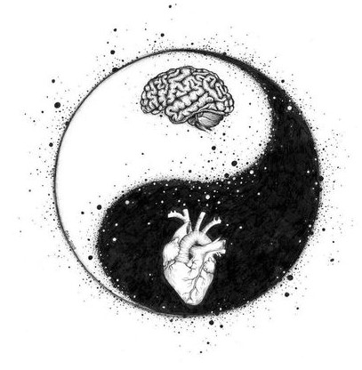
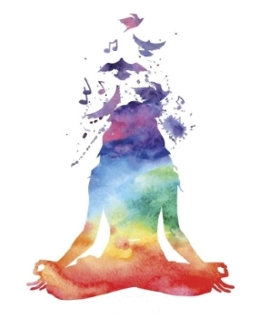
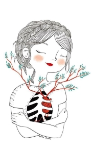
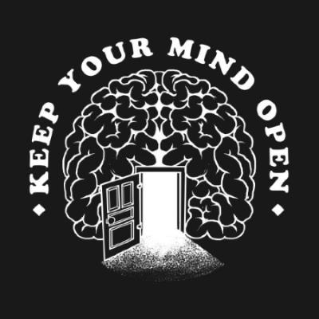

What Is Self-Improvement?
The process of making yourself a better or more knowledgable person can be called self-improvement. Doing sit-ups every night and learning to speak Mandarin might be part of your new self-improvement routine.
Good mental wellbeing doesn't mean you're always happy or unaffected by your experiences. But poor mental wellbeing can make it more difficult to cope with daily life.
It's not always easy to start with caring for your wellbeing. You might find it helpful to:

- only try what feels comfortable
- give yourself time to figure out what works for you, going at your own pace
- take small steps. Pick one or two things that feel achievable at first, before moving on to try other ideas.
One thing to remember: none of us is perfect. We all have our limits. What's good enough for you is great.
Learn to understand and manage your feelings
Leave your comfort zone
The comfort zone is a psychological state in which a person feels at ease because they're not being tested.
- Do one thing you've always wanted to
- Do everyday things differently
- Expand your professional skillset
- Choose a fear, and face it
- Practice honesty
- Travel somewhere new
Practise mindfullness
Mindfulness is the basic human ability to be fully present, aware of where we are and what we're doing, and not overly reactive or overwhelmed by what's going on around us.
In some cases, the mind may be caught up in stories that aren't even based in reality. Mindfulness can offer respite from a busy mind, though it takes conscious intention and regular practice.
Mindfulness can help you improving cognitive ability, slowing brain aging, reducing stress, anxiety, and depression symptoms, increasing a sense of well-being, helping with pain management and improving quality of life for those living with chronic conditions
Try journalling
Journaling is a written account of your thoughts and feelings as you navigate everyday life. The beauty of journaling is that there's no right or wrong way to do it. It's a deeply personal experience that can take many forms.
Learn more: JOURNALING TIPS FOR BEGINNERS
Deep breathing
Take a deep breath in. Now let it out. You may notice a difference in how you feel already. Your breath is a powerful tool to ease stress and make you feel less anxious. Some simple breathing exercises can make a big difference if you make them part of your regular routine.
Most people take short, shallow breaths into their chest. It can make you feel anxious and zap your energy.
Gratitude
Practicing gratitude has incredible effects, from improving our mental health to boosting our relationships with others.
Feeling grateful boosts positive emotions like joy and compassion while encouraging us to look for and connect with what's good in life. This helps us switch our attention from toxic emotions, such as resentment and envy.
You can try to create a gratitude jar, track daily positive actions, say what you're grateful for out loud or revisit and reframe past events.
Forgiveness
Forgiveness is the conscious decision to let go of resentment after you feel you have been wronged. It's natural to feel angry, betrayed, and disappointed after someone has hurt you. But forgiving them can benefit your mental health.
There are two parts of forgiveness, self-forgiveness and forgiveness to others.
Look after your physical health
Drink enough water
Getting enough water every day is important for your health. Drinking water can prevent dehydration, a condition that can cause unclear thinking, result in mood change, cause your body to overheat, and lead to constipation and kidney stones.
Be active and exercise
Exercise is a type of physical activity that you plan. You do it to improve your muscle strength, flexibility, heart and lung health.
For example a whole body stretching exercises every day can have a incredible effects on you. Exercise can make you feel better and have more energy.
Eat healthy food
Food is one of the basic necessities of life. It contains nutrients—substances essential for the growth, repair, and maintenance of body tissues and for the regulation of vital processes.
Eating healthy means following a healthy eating pattern that includes a variety of nutritious foods and drinks. It also means getting the number of calories that's right for you (not eating too much or too little).
Dance or try Yoga
There are many similar health benefits between the two disciplines. Both can be fun and help you to feel better in your own skin. There is a countless amount of videos, for example on Youtube, which will help you to start.
Get closer to nature
Spend time outdoors
Studies show time and time again that regular outdoors time helps to lower stress and minimizes feelings of anxiety and depression.
The modern world contains plenty of intrusive stimuli — flashing screens, vibrating phones, rumbling roadways — that compete for our limited attention. This ongoing overstimulation may raise your stress levels without you even realizing it.
Many people aslo don't realise the risks of indoor air pollution. Air pollution can trigger allergies, asthma, and other respiratory diseases.
The natural world, on the other hand, can offer a mental and emotional refuge when you need to unwind and recharge. In nature, soothing attractions for your senses, from the perfume of flowers to the music of bird song, can hold your attention without draining your mental energy.
You can go for a half hour walk to the nearest forest or go hiking, the sun bath is option too.
Bring nature inside
When your windows are closed, the air becomes stale and unventilated. This can lead to mold, indoor pollutants, and allergens that can negatively affect your quality of sleep, concentration, focus, and general well-being. Open the windows periodically to clear the indoor air - yes, even in the winter! Just 10-15 minutes can do wonders.
You can also grow houseplants. Don't forget that you can also grow edible plants, like spices, herbs, strawberries, mini tomatoes and even lettuce indoors.
Or you can just simply spend some time with your furry friend.
Try mindfullness exercise in nature
As simple it sounds, you can connect together the meditation and nature together. All you need to do is find a good spot and let the things happen around you.
Connect with others
Friends and family
Deep human connections are vital for mental and physical health because they fulfill an innate human need to belong. Connected relationships allow you to open up, be authentic, and feel truly supported by those around you.
Great personality and positive personal growth comes from human connections.
Deeper unique conversation is a good start. Or you can just go somewhere with you partner, friends or family.
Therapy
Therapy is a form of treatment aimed at relieving emotional distress and mental health problems. Provided by any of a variety of trained professionals—psychiatrists, psychologists, social workers, or licensed counselors. It involves examining and gaining insight into life choices and difficulties faced by individuals, couples, or families.
Most therapies in wide use have been well-tested and deemed effective. Though it may at first feel difficult to seek out therapy, especially for those of low-income or without comprehensive insurance. The benefits of successful therapy are literally life-changing.
Read more about this topic: Psychopogy Today
Show love to someone in your life
We all give and receive love in 5 different ways: words of affirmation, acts of service, receiving gifts, quality time, and physical touch. These are called 'love languages' - a concept created by Dr. Gary Chapman through his long-time
- Time - when a person gives you their undivided attention, or makes time to take a walk or do another activity together, they are expressing that you are a priority in their life.
- Acts - another way to express love is to do something kind or helpful for another person (doing a chore or making a meal).
- Touch - a simple hug can chance a day for a person enormously.
- Words - giving compliments and encouragement, saying “I love you,” and leaving notes of affection and appreciation.
- Gifts - giving flowers, clothes, a favorite treat, or a handmade item.
Be curious and open-minded to new experiences
In everyday use, the term "open-minded" is often used as a synonym for being non-prejudiced or tolerant. From a psychological perspective, the term is used to describe how willing people are to consider other perspectives or to try out new experiences.
In general, open-minded people tend to be curious to hear what others think, be able to have their ideas challenged, have empathy for other people, want to hear what other people have to say.
Volunteer
Being a volunteer has lots of benefits. It can bring meaning and purpose to your life, while increasing your self-esteem and wellbeing. Volunteering can also relieve stress, and alleviate symptoms of depression. As well as having a positive impact on your community, volunteering can improve your relationships.
Find ways to learn and be creative
Create something with your hands
Painting, sewing, model making, sculpting, crocheting, macrame, beading, embroidery and more. Even things like playing an instrument gets your hands moving and has you creating something.
Learn a new skill
As you develop a new skill, you'll gain courage and confidence, which helps you override fear and anxiety. You'll feel more empowered.
Some of the most in-demand skills that you should learn for the future can be coding, cloud computing, critical thinking, emotional intelligence or communication.
Pick up a new hobby
The most important thing is to find something that interests you. Another great way to find a new hobby is by talking to friends and family members about their interests. Chances are, if they enjoy doing something, there's probably something in it for you too!
Learning how to cook, experimenting with baking, drawing something, practicing meditation, or even a reading a book can be good start how to pick up a new hobby.
Try to get a quality sleep
Avoind screens
Studies show two or more hours of screen time in the evening can seriously disrupt the melatonin surge needed to fall sleep. Consider turning off all electronic devices at least one hour before sleep, at a minimum. Try reading a book, taking a warm bath or doing some other type of relaxing activity.
Start a routine
Establishing a sleep routine that works for you helps you get the recommended amount of sleep each night. Sleep routines are activities before bed each night such as brushing teeth, setting up a electronic curfew.
Keep a consistent sleep schedule. Get up at the same time every day, even on weekends or during vacations.
Clean bed sheets
Not washing your sheets regularly exposes you to the fungi, bacteria, pollen, and animal dander that are commonly found on sheets and other bedding. Other things found on sheets include bodily secretions, sweat, and skin cells.
You should wash your bed sheets once per week. Washing once a week is best, but definitely wash sheets at least once every two weeks.
Right room temperature
A cooler sleeping environment actually promotes higher melatonin production, encouraging sleep onset and more restful sleep.
For the best possible sleep environment, keep your bedroom between 15°C and 22 degrees°C (18°C degrees is typically ideal).